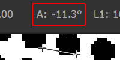

Easily calculate screentone line frequency
No data is being uploaded or stored
Pixel diameter
The size of an entire tile. (help) To check the diameter of an existing screentone use the marquee tool (M) and measure the size of a screentone tile.Angle
The angle between dots. (help)  This is usually 45 degrees in manga but you can check an arbitrary angle using the ruler tool (I)DPI
Pixels per inch. (help) To check your document's DPI go to Image > Image size(Ctrl + alt + I)
Shape
The shape of the screentone dots. (help) There are six screentone shapes in photoshop: round, diamond, ellipse, line, square and cross.
There are six screentone shapes in photoshop: round, diamond, ellipse, line, square and cross.
How to use:
- In a new layer, paint the area you want to cover with a screentone using the appropiate gray shade.
- Copy the gray layer into a new document. Turn your image mode to grayscale, and then to bitmap
- Select your DPI and as method use Halftone Screen. Then the rest of the paramenters including the calculated frequency value.
- Copy the generated screentone in place.